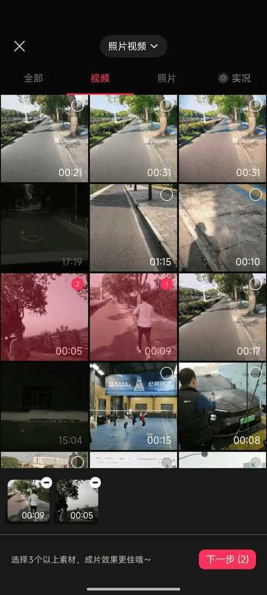
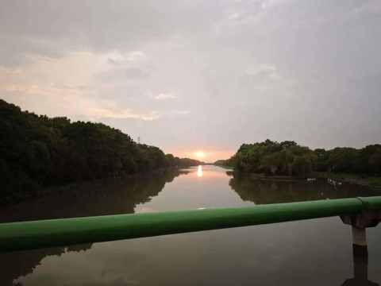

日更100天走到第84天，我撞上了“墙”：下笔难，写的慢，最难的时候到了！
一、撞 “ 墙 ” ，总是难免的
之前我还不太确定，大概是 11 月 9 号在合肥跑完马拉松回来之后，是结结实实的撞上了。

有几个显著表现：
① 选择困难
表面上选题特别多，但决定写哪一个选题越来越难，特别耗时。
② 更新时间变化
从刚开始能稳定在上午开始写到中午发出去，到现在上午完全不想写到晚上 9 点才开始，11 点左右才发出去，最晚的一天是 11 点 50 多。
③ 过程不顺畅
虽然不太有刚开始那种，每一个字都是憋出来的感受，但过程是不顺畅的，从而导致表达上的啰嗦和不准确。
下面这篇文章便是一个很好的错误示范：
五块五一个的牛肉大包，我没给儿子买
由于表达上的不精准和啰嗦，导致有一些留言直接被系统屏蔽了，我也主动拉黑了一些较为刻薄的留言。
即便如此，我现在放出来的这些留言，依然会让我心情复杂，好在情绪上不会有反应，就当给自己提个醒，有则加勉，无则改之。
二、任何形式的记录，都有意义
今天中午，趁着太阳正好，和朋友一起去跑步，解锁了他的第一个 15km。
在深秋，跑在上海郊区宽阔的非机动车道上，旁边一边是机动车道，另一边是农田、绿地、河流、小溪、菜地……
此时此刻此景，你很难不去记录点什么。
今天在跑的时候随时拍了几段视频，然后用剪映的【一键成片】的功能完成的剪辑，我这种手残党太需要这种功能啦！

还记得暑假有一次，跑步时遇到落日，我在拍的时候，一个外卖小哥也把电动车停下来拍了几张，我们相视一笑，每个人拍好后都继续各自的节奏。

三、最难的时候到了
古人云：行百里者半九十。
古人诚不欺我！最难的时候到了！
接下来两周多的时间，需要做的是这几个事情：
① 继续日更
不管什么时候开始写，都得在零点前把文章发出去，毕竟 Deadline 是第一生产力。
② 多去体验
接近一年没有去试驾新车，日常的活动范围基本是小区和学校门口，范围过小。
实践证明，只有去多多体验，才有可能会产生一些不同以往的感受，进而才有东西能总结，然后表达出来。
四、为什么要日更 100 天
在这个期间，有很多人问过这个问题。
在刚开始日更的时候，并不觉得这是一个问题，因为这是在我现在所处的阶段，想做的一个事情。
但做着做着会发现，很多事情之所以做，都有一个潜在的出发点和逻辑链条在，只是很多信息在刚开始并未浮出水面。
我现在每天都会运动和日更，其核心原因，是这两件事情能调整状态，或者说不是调整，是让状态不再继续下滑。
逆水行舟，不进则退！这个道理小学的时候便学过，但往往是知易行难。
现在我可以更清晰地回答那个问题：日更，是我在洪流中为自己抛下的一个锚。 它无法让我逆流而上，但能防止我被轻易冲走。
近期文章
90 年，35 岁，E区出发，即将在福州解锁首全马
嘿！还记得“为QQ等级挂机”的岁月吗？来晒晒你的等级吧！
11 个月，开极氪7X跑两万公里，用车总结及好物分享
一个长居省外中年人的合肥印象：记2025的年第4次合肥行
中年减肥成功2年后，才发现运动形式真不重要，守住这3点才能不反弹！
我的两个配图利器：两个APP强强联合，实现1+1 > 2的视觉升级
中年初跑者增加跑量两个月后，对如何选跑鞋有了 3个新思考
别慌！和所有Intel版Mac用户共享：3个让我们继续用的理由和2个续命秘籍
中年减肥成功2年后，才发现这5个坑当初要是有人点醒我该多好！
中年减肥成功2年后，才发现维持体重靠的不是毅力，而是这5个微习惯